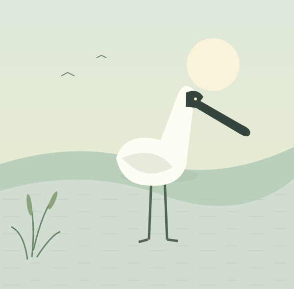

관심의 시작은 이해
저어새의 생김새와 먹이 활동, 계절에 따른 이동을 함께 알아갑니다.
갯벌 위를 천천히 걷는 작은 생명.
저어새를 알아가는 일에서 우리의 보존은 시작됩니다.

알아가고 · 기록하고 · 함께 지킵니다
저어새와 서식 환경을 소개하고, 관측 정보를 누구나 쉽게 이해할 수 있도록 연결하는 보존 프로젝트입니다.
저어새의 생김새와 먹이 활동, 계절에 따른 이동을 함께 알아갑니다.
지역별 관측 정보를 지도에서 살펴보고, 저어새와 습지의 관계를 이해합니다.
서식지를 존중하는 관찰과 일상 속 실천으로 보존의 의미를 나눕니다.
팀 소개 초안입니다. ‘저어새의 내일’은 임시 프로젝트명이며, 실제 팀명·구성원·활동 이력은 추후 추가할 예정입니다.